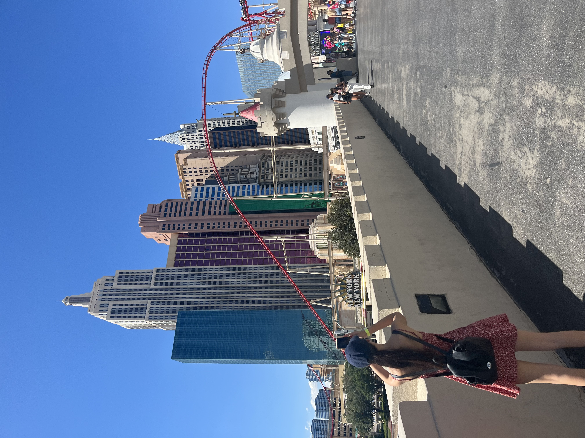
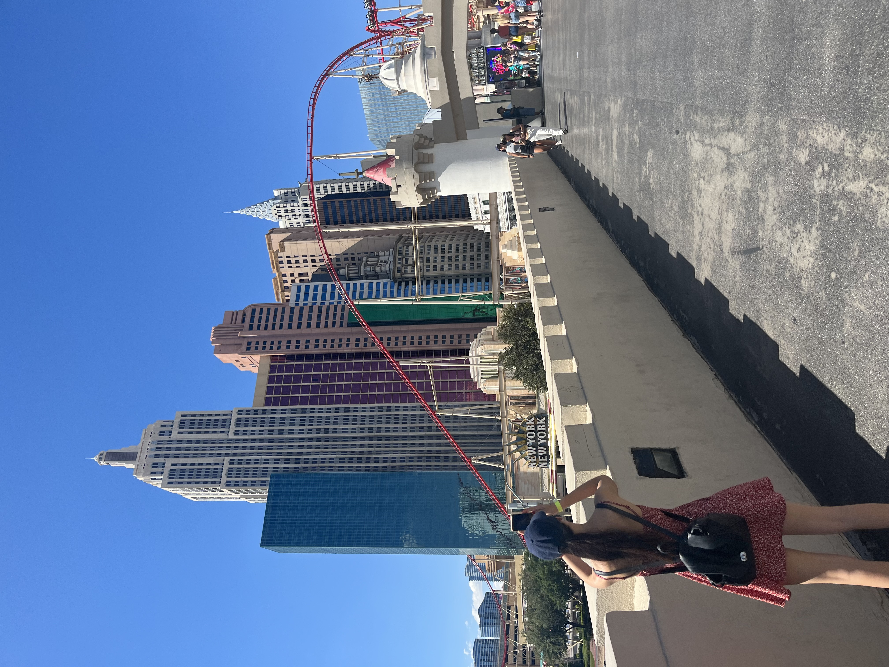

Travel
Exploring the World: My Travel Adventures
Traveling is one of my favorite hobbies because it allows me to experience new cultures, landscapes, and lifestyles. Each trip offers a unique adventure and the chance to create lasting memories.
My visit to Dubai was exciting, with its stunning skyscrapers, desert safaris, and rich cultural heritage.
I visited the Burj Khalifa and it was an unforgettable experience that left me in awe of its architectural brilliance and breathtaking views.
My visis to Las Vegas was entertaining as well, the nightlife isn’t just about clubs and casinos, live entertainment is everywhere. From Cirque du Soleil shows to world-famous musicians and comedians performing in grand theaters, the Strip is always alive with incredible performances.
In Atlanta, I enjoyed the vibrant city life, historical sites, and delicious southern food.
Phoenix amazed me with its beautiful desert scenery and outdoor activities, making each trip a rewarding experience. etc
Each of my travel experience guarantees an unforgettable experience every time.
 
